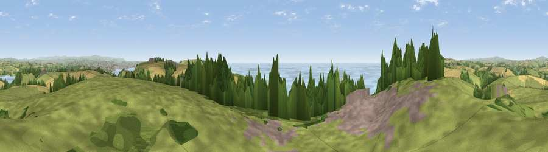

Viewpoint near Freathy
#1980 in England · top 4% of its area beats it · near FreathyThe view, rendered

A 360° render of this exact spot computed from the terrain model, tree cover and land cover — summer colours, afternoon light, calibrated against photographs of famous viewpoints. Real trees, hedges and buildings will differ in detail.
The panorama
Grey silhouette: terrain skyline in each direction (720 bearings, Earth curvature and refraction included). Dashed green: skyline with trees (+15 m) and buildings (+8 m) as obstacles. Blue strip: how far the ground is visible on each bearing.
Where the view opens
Wedge length = distance to the farthest visible ground on that bearing (vegetation-aware). Rings at 10, 25 and 50 km.
What fills the view
38% grassland · 26% water · 15% woodland · 14% cropland · 6% built-up
Angular shares of the visible panorama (visual magnitude), not map area. Landscape diversity 0.63 (0–1 Shannon).
Key numbers
More beautiful places nearby
The staircase of upgrades: each row has a higher view potential than everything closer. Driving times are estimates from straight-line distance, calibrated against real road routing — check an actual route before setting out.
| Place | Direction | Drive | Score |
|---|---|---|---|
| Viewpoint near Freathy | SE · 3 km | ~7 min | 79.5 |
| Viewpoint near Crafthole | WNW · 4 km | ~9 min | 80.5 |
| Viewpoint near Crafthole | W · 4 km | ~10 min | 81.0 |
| Viewpoint near Downderry | W · 5 km | ~11 min | 83.5 |
| Viewpoint near Polperro | W · 20 km | ~33 min | 83.7 |
| Pencarrow Head | W · 24 km | ~39 min | 86.0 |
| Viewpoint near Stenalees | W · 39 km | ~58 min | 88.0 |
| Viewpoint near Crackington Haven | NW · 48 km | ~69 min | 88.1 |
50.35768, -4.26860 · source: screening · position refined by local search. Computed location — check access rights before visiting.